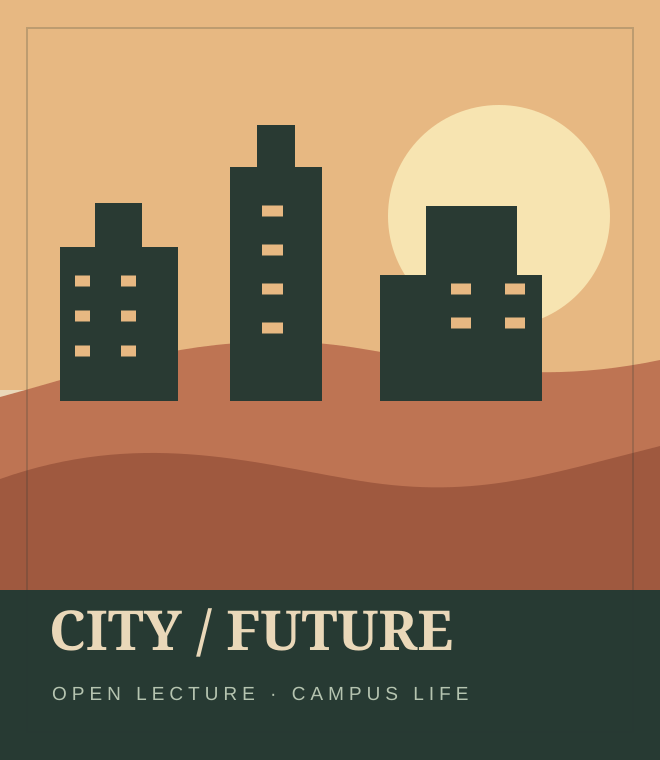

ISSUE NO. 04 — OPEN LECTUREIN YOUR INBOX
校园消息，也可能藏着不同的去向。
真实使用中，Deep Link 常出现在活动卡片、消息提醒和服务入口里。下面是由固定样例构造的七种受控情境。
SEVEN CONTROLLED ROUTES
从哪种入口开始？
每个入口都有一条固定、无害的测试 URI。
预检结果是基于 C 的静态规则预期，不是真机运行记录。
正在载入本地测试样例…
01选择入口
从活动、消息或服务卡片进入。
02查看 URI
对照 Scheme、包名、fallback 与参数。
03验证证据
复制到手机端解析；云端证据由 B 单独采集。